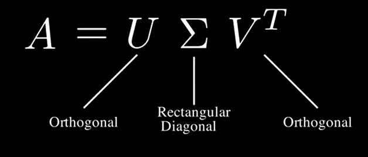
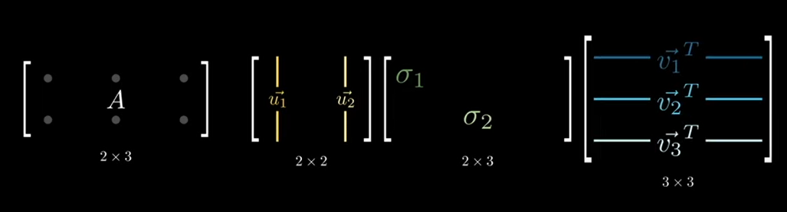
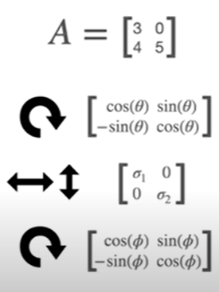

import torch
import torch.nn as nn
import torch.optim as optim
import torchvision
import torchvision.transforms as transforms
from torch.utils.data import DataLoader
from torchvision import modelsLow Rank Approximation Implementation 1/4
Tech
Singular Value Decomposition (SVD) - Model Compression : Resnet18
Model Compression
Singular Value Decomposition (SVD) - Resnet18
Singular Value Decomposition (SVD) is a mathematical technique used to decompose a matrix into three other matrices. In other words, SVD is a classic low-rank approximation technique, where the weight matrices of CNN layers (particularly fully connected or convolutional layers) are factorized into three matrices: \(W = U \Sigma V^T\). Here, \(U\) and \(V\) are orthogonal matrices, and \(\Sigma\) is a diagonal matrix with singular values. By truncating the smaller singular values, a low-rank approximation of the weight matrix can be obtained, reducing the number of parameters.
SVD , which makes it extremely useful for low-rank approximation. Specifically, given an \(m \times n\) matrix \(A\), SVD decomposes it as: \[A = U \Sigma V^T\]


Where:
- \(U\): An \(m \times m\) orthogonal matrix, whose columns are called left singular vectors. The matrix is considered an orthogonal matrix if the product of a matrix and its transpose gives an identity value.
- \(\Sigma\): An \(m \times n\) diagonal matrix with non-negative real numbers on the diagonal (these are called singular values). A matrix is diagonal if it has non-zero elements only in the diagonal, running from the upper left to the lower right corner of the matrix.
- \(V^T\): The transpose of an \(n \times n\) orthogonal matrix, whose columns are called right singular vectors.
Rank :The rank of a matrix is a fundamental concept in linear algebra that indicates the number of linearly independent rows or columns in a matrix.
The goal of Low Rank Factorization is to approximate \(A\) with a matrix of lower rank \(k\), where \(k < min(m, n)\), to reduce the amount of data and computation while retaining the most important information.
Transformation express by one rotation, horizontal or vertical stretching, and another rotation. 
References * https://www.youtube.com/watch?v=DG7YTlGnCEo
# Step 1: Load Imagenette Dataset
transform = transforms.Compose([
transforms.Resize((320, 320)), # Resize all images to the same size
transforms.ToTensor(),
transforms.Normalize((0.5, 0.5, 0.5), (0.5, 0.5, 0.5))
])
trainset = torchvision.datasets.ImageFolder(root='./imagenette/imagenette2-320/train', transform=transform)
trainloader = DataLoader(trainset, batch_size=32, shuffle=True)
testset = torchvision.datasets.ImageFolder(root='./imagenette/imagenette2-320/val', transform=transform)
testloader = DataLoader(testset, batch_size=32, shuffle=False)# Step 2: Define ResNet-18 Model
model = models.resnet18(pretrained=False)
model.fc = nn.Linear(model.fc.in_features, 10) # Adjust the final layer for 10 classes# Step 3: Apply Low Rank Factorization on Convolutional Layers
def low_rank_approximation(conv_layer, rank):
with torch.no_grad():
# Reshape the weight of convolutional layer to 2D tensor for SVD
W = conv_layer.weight.data
out_channels, in_channels, kh, kw = W.size()
W_2d = W.view(out_channels, -1)
# Apply SVD
U, S, V = torch.svd(W_2d)
U_r, S_r, V_r = U[:, :rank], S[:rank], V[:, :rank]
# Create low-rank approximation
W_low_rank = torch.mm(U_r, torch.diag(S_r)).mm(V_r.t())
W_low_rank = W_low_rank.view(out_channels, in_channels, kh, kw)
# Update the conv layer weight
conv_layer.weight.data = W_low_rank
# Apply Low Rank Approximation to Conv1 and Conv2 layers of ResNet-18
rank = 8 # Set rank to be half of the original rank to reduce parameters
low_rank_approximation(model.layer1[0].conv1, rank)
low_rank_approximation(model.layer1[0].conv2, rank)# Step 4: Retrain the Model
criterion = nn.CrossEntropyLoss()
optimizer = optim.SGD(model.parameters(), lr=0.001, momentum=0.9)
def train(model, trainloader, criterion, optimizer, epochs=5):
model.train()
for epoch in range(epochs):
running_loss = 0.0
for i, (inputs, labels) in enumerate(trainloader, 0):
optimizer.zero_grad()
outputs = model(inputs)
loss = criterion(outputs, labels)
loss.backward()
optimizer.step()
running_loss += loss.item()
if i % 100 == 99: # Print every 100 mini-batches
print(f'Epoch {epoch + 1}, Batch {i + 1}, Loss: {running_loss / 100:.3f}')
running_loss = 0.0
train(model, trainloader, criterion, optimizer, epochs=5)Epoch 1, Batch 100, Loss: 2.092
Epoch 1, Batch 200, Loss: 1.813
Epoch 2, Batch 100, Loss: 1.549
Epoch 2, Batch 200, Loss: 1.418
Epoch 3, Batch 100, Loss: 1.292
Epoch 3, Batch 200, Loss: 1.268
Epoch 4, Batch 100, Loss: 1.103
Epoch 4, Batch 200, Loss: 1.096
Epoch 5, Batch 100, Loss: 0.997
Epoch 5, Batch 200, Loss: 0.988# Step 5: Evaluate the Final Model
def evaluate(model, testloader):
model.eval()
correct = 0
total = 0
with torch.no_grad():
for inputs, labels in testloader:
outputs = model(inputs)
_, predicted = torch.max(outputs.data, 1)
total += labels.size(0)
correct += (predicted == labels).sum().item()
print(f'Accuracy: {100 * correct / total:.2f}%')
evaluate(model, testloader)Accuracy: 64.79%- References:
- https://pytorch.org/docs/stable/generated/torch.svd.html
- Sainath, T. N., Kingsbury, B., Sindhwani, V., Arisoy, E., & Ramabhadran, B. (2013). Low-rank matrix factorization for Deep Neural Network training. In ICASSP.